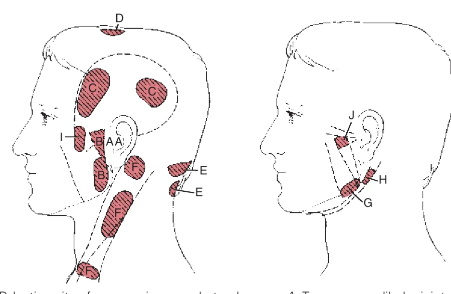

نسخه استخراجشده؛ ترجمه یا تأیید علمی انجام نشده است. وضعیت: captured
تاریخچهی دندانی به شاخههای مجزا تقسیم میشود، و هر شاخه یک پیامد پروتزی مشخص دارد. ارزش این درس در همان پیامدهاست، نه در فهرست کردن شاخهها.
و یک شاخهی هشتم که تکلیف زمانبندی درمان را روشن میکند: درد میوفاشیال، کلیک مفصل و علائم نوروماسکولار «باید پیش از آغاز درمان پروتز ثابت درمان و حل شوند». اگر این را جدی نگیری، ترمیم را روی یک سیستم ناپایدار میسازی. پرسشنامهی غربالگری، بیمارانی را که با این علائم در معرض خطر بالاتر عوارضاند، کارآمد شناسایی میکند.
و دربارهی ارزیابی کار همکار: قضاوت منصفانه دربارهی درمان قبلی دشوار است چون «شرایطی که آن درمان در آن انجام شده بهندرت شناخته شده است» — و اگر چنین ارزیابی برای دعوای حقوقی خواسته شود، بیمار باید به متخصصِ آشنا با استاندارد مراقبت «معمول و مرسوم» ارجاع شود.
اصل معاینه در یک جمله: «برای پرهیز از اشتباه، حیاتی است که آنچه واقعاً مشاهده میشود ثبت شود، نه اظهارنظر تشخیصی دربارهی آن وضعیت.» یعنی بنویس «تورم، قرمزی، خونریزی هنگام پروب» — نه «التهاب لثه»، که خودش یک تشخیص است.
مفصل گیجگاهی-فکی. مفصل با لمس دوطرفه درست جلوی تراگوس گوش حین باز و بسته شدن دهان لمس میشود تا زمانبندی نسبی حرکت کندیل چپ و راست مقایسه شود. «حرکت ناهمزمان ممکن است نشاندهندهی جابهجایی دیسک باشد که مانع حرکت ترانسلیتوری طبیعی یکی از کندیلها میشود.»
لمس آریکولار با فشار ملایم به جلو به شناسایی اختلال در اتصال خلفی دیسک کمک میکند؛ حساسیت یا درد هنگام حرکت میتواند نشانهی تغییرات التهابی در بافت رترودیسکال باشد، که پرعروق و پرعصب است.
و یک نکتهی تکنیکی که کیفیت معاینهات را عوض میکند: کلیک مفصل «از راه لمس آریکولار اغلب قابل تشخیص است ولی با لمس مستقیم روی قطب لترال کندیل دشوار است، چون بافتهای روی آن صدا را خفه میکنند». و گذاشتن نوک انگشتان روی زاویهی فک حتی کلیک بسیار کوچک را آشکار میکند، «چون بافت نرم بسیار کمی میان انگشت و استخوان مندیبل قرار دارد».
اعداد طبیعی را حفظ کن:
محدودیت باز شدن «میتواند نشانهی تغییرات داخلکپسولی در مفاصل باشد». هر انحراف خط وسط هنگام باز یا بسته شدن هم ثبت میشود.
لمس عضلات. محدودیتش را صادقانه بپذیر: «اطلاعاتی فقط از وضع موجود، در زمان معاینه میدهد». لمس باید دوطرفه و همزمان باشد تا خود بیمار تفاوت دو طرف را گزارش کند؛ و فشار باید سبک باشد — «مقدار فشاری که روی پلک بستهی خود بدون ناراحتی تحمل میشود، معیار مقایسهی خوبی است».
اگر تفاوتی گزارش شد، بیمار آن را خفیف، متوسط یا شدید طبقهبندی میکند. در بیمار با شواهد اختلال مفصلی، هر نقطهی لمس نمرهی عددی میگیرد تا اگر درمان نوروماسکولار یا مفصلی شروع شد، با لمس دوبارهی همان نقاط پاسخ درمان سنجیده شود.
لب و لبخند — جایی که پروتز ثابت زیبایی میشود: «بیش از ۲۵ درصد افراد یکسوم لثهای سانترالهای ماگزیلا را حتی در لبخند اغراقآمیز نشان نمیدهند.» وسعت لبخند به طول و تحرک لب بالا و طول زائدهی آلوئولار بستگی دارد. و فضای تیرهای که هنگام خنده میان دندانهای بالا و پایین دیده میشود، فضای منفی نام دارد؛ دندان غایب، دیاستم و دندان شکسته «هارمونی فضای منفی را برهم میزنند».
